Возможности шрифта OpenType
В этом разделе содержится обзор некоторых ключевых возможностей OpenType технологии шрифтов в Windows Presentation Foundation (WPF).
Формат шрифта OpenType
Формат шрифта OpenType является расширением формата шрифта TrueType®, добавляющим поддержку данных шрифтов PostScript. Формат шрифта OpenType был разработан совместно Майкрософт и Adobe Corporation. OpenType шрифты и операционной системы, службы, поддерживающие OpenType шрифты предоставляют пользователям простой способ установки и использования шрифтов, содержат ли TrueType контуров или структуры CFF (PostScript).
Формат шрифта OpenType решает следующие задачи разработки.
Расширенная поддержка многоплатформенности.
Улучшенная поддержка международных кодировок.
Улучшенная защита данных шрифта.
Меньшие размеры файлов, что повышает эффективность распространения шрифта.
Расширенная поддержка дополнительного типографского контроля.
Note
Пакет Windows SDK содержит набор образцов шрифтов OpenType, которые можно использовать с приложениями Windows Presentation Foundation (WPF). Эти шрифты обеспечивают большинство функций, приведенных в остальной части этого раздела. Дополнительные сведения см. в разделе Пакет образцов шрифтов OpenType.
Подробные сведения о формате шрифтов OpenType см. в разделе Спецификации OpenType.
Дополнительные типографские расширения
Дополнительные типографские таблицы (макетные таблицы OpenType) расширяют функциональные возможности шрифтов со структурами TrueType или CFF. OpenType Шрифты макета содержат дополнительную информацию, которая расширяет возможности шрифтов для поддержки международной типографии высокого качества. Большинство шрифтов OpenType предоставляет только подмножество общих доступных функций OpenType. OpenType шрифты обеспечивают следующие возможности.
Широкое сопоставление между символами и глифами с поддержкой лигатур, позиционных форм, вариантов и других подстановок шрифтов.
Поддержка двумерного позиционирования и вложения глифов.
Явные сведения сценариев и языка, содержащиеся в шрифте, чтобы приложение обработки текста могло соответствующим образом настроить его поведение.
Макетные таблицы OpenType подробно описаны в разделе «Таблицы файла шрифта» спецификации OpenType.
Остальная часть в этом обзоре описываются Широта и гибкость некоторых дающих интересные OpenType функций, доступных в свойствах объекта Typography объекта. Дополнительные сведения об этом объекте см. в разделе Класс Typography.
Варианты
Варианты используются для отображения различных типографских стилей, например надстрочных и подстрочных знаков.
надстрочные и подстрочные
Variants Свойство позволяет задать надстрочные и подстрочные значения для OpenType шрифта.
Следующий текст демонстрирует надстрочные знаки для шрифта Palatino Linotype.
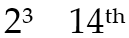
В следующем примере разметки показано, как задаются надстрочные знаки для шрифта Palatino Linotype с помощью свойств класса Typography объекта.
<Paragraph FontFamily="Palatino Linotype">
2<Run Typography.Variants="Superscript">3</Run>
14<Run Typography.Variants="Superscript">th</Run>
</Paragraph>
Следующий текст демонстрирует подстрочные знаки для шрифта Palatino Linotype.
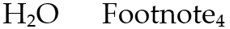
В следующем примере разметки показано, как задаются подстрочные знаки для шрифта Palatino Linotype с помощью свойств класса Typography объекта.
<Paragraph FontFamily="Palatino Linotype">
H<Run Typography.Variants="Subscript">2</Run>O
Footnote<Run Typography.Variants="Subscript">4</Run>
</Paragraph>
Применение надстрочных и подстрочных знаков в декоративных целях
Надстрочные и подстрочные знаки можно также использовать для создания декоративных эффектов текста в смешанном регистре. Следующий текст демонстрирует надстрочный и подстрочный текст для шрифта Palatino Linotype. Обратите внимание, что заглавные буквы не затрагиваются.
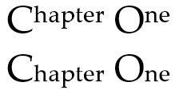
В следующем примере разметки показано, как задаются надстрочные и подстрочные знаки для шрифта, с использованием свойства Typography объекта.
<Paragraph FontFamily="Palatino Linotype" Typography.Variants="Superscript">
Chapter One
</Paragraph>
<Paragraph FontFamily="Palatino Linotype" Typography.Variants="Subscript">
Chapter One
</Paragraph>
Capitals
Capitals — это набор типографских форм, которые отображают текст в прописных глифах. Когда текст отображается всеми прописными буквами, обычно расстояние между буквами кажется слишком маленьким, а плотность и пропорции символов слишком большими. OpenType поддерживает множество форматов стилей для прописных букв, включая малые прописные, капитель, титульные буквы и прописные интервалы. Эти форматы стиля позволяют управлять внешним видом прописных букв.
Следующий текст демонстрирует стандартные прописные буквы, буквы в стиле SmallCaps и в стиле AllSmallCaps для шрифта Pescadero. В данном случае для всех трех слов используется один и тот же размер шрифта.
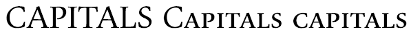
В следующем примере разметки показано, как задаются прописные буквы для шрифта Pescadero с помощью свойств класса Typography объекта. При использовании формата SmallCaps начальные прописные буквы игнорируются.
<Paragraph FontFamily="Pescadero" FontSize="48">
<Run>CAPITALS</Run>
<Run Typography.Capitals="SmallCaps">Capitals</Run>
<Run Typography.Capitals="AllSmallCaps">Capitals</Run>
</Paragraph>
Титульные прописные буквы
Титульные прописные буквы имеют меньшую плотность и пропорции и разработаны для придания более изысканного вида, чем при использовании обычных прописных букв. Титульные прописные буквы обычно используются в больших размерах шрифтов для заголовков. Следующий текст демонстрирует обычные и титульные прописные буквы для шрифта Pescadero. Обратите внимание на более узкие ножки в тексте во второй строке.
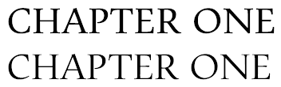
В следующем примере разметки показано, как задаются титульные прописные буквы для шрифта Pescadero с помощью свойств класса Typography объекта.
<Paragraph FontFamily="Pescadero">
<Run Typography.Capitals="Titling">chapter one</Run>
</Paragraph>
Интервалы прописных букв
Прописной интервал — это функция, которая позволяет обеспечить дополнительные интервалы при использовании в тексте только прописных букв. Прописные буквы обычно разрабатываются для использования вместе со строчными. Интервал между прописной и строчной буквами, который кажется вполне подходящим, может выглядеть слишком маленьким при использовании только прописных букв. Следующий текст демонстрирует обычный и прописной интервалы для шрифта Pescadero.
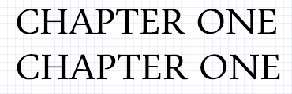
В следующем примере разметки показано, как задается прописной интервал для шрифта Pescadero с помощью свойств класса Typography объекта.
<Paragraph FontFamily="Pescadero">
<Run Typography.CapitalSpacing="True">CHAPTER ONE</Run>
</Paragraph>
Лигатуры
Лигатуры — это два (или более) глифа, превращающиеся в один глиф для создания более читаемого или привлекательного текста. OpenType шрифты поддерживают четыре типа лигатур:
Стандартные лигатуры. Разработаны для улучшения удобочитаемости. Стандартные лигатуры включают fi, fl и ff.
Контекстные лигатуры. Разработаны для улучшения удобочитаемости путем обеспечения более эффективного поведения соединения символов, составляющих лигатуры.
Дискретные лигатуры. Предназначены для украшения и не разрабатывались для удобочитаемости.
Исторические лигатуры. Предназначены для исторических целей и не разрабатывались для удобочитаемости.
Следующий текст демонстрирует глифы стандартных лигатур для шрифта Pericles.
В следующем примере разметки показано, как задаются глифы стандартных лигатур для шрифта Pericles с помощью свойств класса Typography объекта.
<Paragraph FontFamily="Pericles" Typography.StandardLigatures="True">
<Run Typography.StylisticAlternates="1">FI</Run>
<Run Typography.StylisticAlternates="1">FL</Run>
<Run Typography.StylisticAlternates="1">TH</Run>
<Run Typography.StylisticAlternates="1">TT</Run>
<Run Typography.StylisticAlternates="1">TV</Run>
<Run Typography.StylisticAlternates="1">TW</Run>
<Run Typography.StylisticAlternates="1">TY</Run>
<Run Typography.StylisticAlternates="1">VT</Run>
<Run Typography.StylisticAlternates="1">WT</Run>
<Run Typography.StylisticAlternates="1">YT</Run>
</Paragraph>
Следующий текст демонстрирует глифы дискретных лигатур для шрифта Pericles.
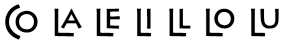
В следующем примере разметки показано, как определить глифы дискретных лигатур для шрифта Pericles с помощью свойств класса Typography объекта.
<Paragraph FontFamily="Pericles" Typography.DiscretionaryLigatures="True">
<Run Typography.StylisticAlternates="1">CO</Run>
<Run Typography.StylisticAlternates="1">LA</Run>
<Run Typography.StylisticAlternates="1">LE</Run>
<Run Typography.StylisticAlternates="1">LI</Run>
<Run Typography.StylisticAlternates="1">LL</Run>
<Run Typography.StylisticAlternates="1">LO</Run>
<Run Typography.StylisticAlternates="1">LU</Run>
</Paragraph>
По умолчанию шрифты OpenType в Windows Presentation Foundation (WPF) используют стандартные лигатуры. Например, при использовании шрифта Palatino Linotype стандартные лигатуры fi, ff и fl отображаются как глиф объединенных символов. Обратите внимание, что пары знаков для каждой стандартной лигатуры касаются друг друга.
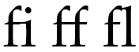
Однако функции стандартных лигатур можно отключить, чтобы стандартные лигатуры, такие как ff, отображались как два отдельных глифа, а не как глиф объединенных символов.
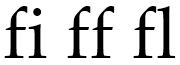
В следующем примере разметки показано, как отключить глифы стандартных лигатур для шрифта Palatino Linotype с помощью свойств класса Typography объекта.
<!-- Set standard ligatures to false in order to disable feature. -->
<Paragraph Typography.StandardLigatures="False" FontFamily="Palatino Linotype" FontSize="72">
fi ff fl
</Paragraph>
Орнаменты
Swash-глифы являются декоративными глифами, которые используют сложную орнаментацию, часто связанную с каллиграфией. Следующий текст отображает стандартные и swash-глифы для шрифта Pescadero.
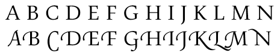
Орнаменты часто используются как декоративные элементы в коротких фразах, таких как объявления о событиях. В следующем тексте орнаменты используются для выделения прописных букв названия события.
В следующем примере разметки показано определение swash-глифы для шрифта, с помощью свойств класса Typography объекта.
<Paragraph FontFamily="Pescadero" TextBlock.TextAlignment="Center">
Wishing you a<LineBreak/>
<Run Typography.StandardSwashes="1" FontSize="36">Happy New Year!</Run>
</Paragraph>
Контекстные орнаментированные глифы
Некоторые комбинации орнаментированных глифов могут приводить к непривлекательному результату, например когда перекрываются подстрочные элементы на соседних буквах. Контекстные орнаментированные глифы позволяют использовать замещающий орнаментированный глиф, улучшающий внешний вид. Следующий текст показывает одно и то же слово до и после применения контекстного орнаментированного глифа.
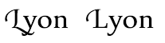
В следующем примере разметки показано, как задается контекстный глиф для шрифта Pescadero с помощью свойств класса Typography объекта.
<Paragraph FontFamily="Pescadero" Typography.StandardSwashes="1">
Lyon <Run Typography.ContextualSwashes="1">L</Run>yon
</Paragraph>
Варианты
Варианты — это глифы, на которые может заменяться стандартный глиф. OpenType шрифты, например Pericles, используемый в следующих примерах, могут содержать альтернативные глифы, которые можно использовать для создания другого внешнего вида текста. Следующий текст демонстрирует стандартные глифы для шрифта Pericles.
Шрифт OpenType Pericles содержит дополнительные глифы, поддерживающие изменение стилей для стандартных наборов глифов. Приведенный ниже текст отображает глифы с изменением стиля.
В следующем примере разметки показано, как определить Стилистические варианты глифов для шрифта Pericles с помощью свойств класса Typography объекта.
<Paragraph FontFamily="Pericles">
<Run Typography.StylisticAlternates="1">A</Run>NCIENT
GR<Run Typography.StylisticAlternates="1">EE</Run>K
MYTH<Run Typography.StylisticAlternates="1">O</Run>LOGY
</Paragraph>
Следующий текст демонстрирует несколько других стилистических вариантов глифов для шрифта Pericles.
В следующем примере разметки показано, как определяются эти другие стилистические варианты глифов.
<Paragraph FontFamily="Pericles">
<Run Typography.StylisticAlternates="1">A</Run>
<Run Typography.StylisticAlternates="2">A</Run>
<Run Typography.StylisticAlternates="3">A</Run>
<Run Typography.StylisticAlternates="1">C</Run>
<Run Typography.StylisticAlternates="1">E</Run>
<Run Typography.StylisticAlternates="1">G</Run>
<Run Typography.StylisticAlternates="1">O</Run>
<Run Typography.StylisticAlternates="1">Q</Run>
<Run Typography.StylisticAlternates="1">R</Run>
<Run Typography.StylisticAlternates="2">R</Run>
<Run Typography.StylisticAlternates="1">S</Run>
<Run Typography.StylisticAlternates="1">Y</Run>
</Paragraph>
Случайные контекстные варианты
Случайные контекстные варианты предоставляют несколько заменяющих глифов для одного символа. При реализации со шрифтами рукописного типа эта функция может имитировать рукописный ввод, используя набор случайно выбранных глифов с незначительными различиями во внешнем виде. В следующем тексте используются случайные контекстные варианты глифов для шрифта Lindsey. Обратите внимание, что буква «a» немного отличается.
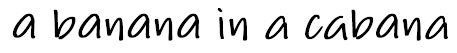
В следующем примере разметки показано, как задаются случайные контекстные варианты для шрифта Lindsey с помощью свойств класса Typography объекта.
<TextBlock FontFamily="Lindsey">
<Run Typography.ContextualAlternates="True">
a banana in a cabana
</Run>
</TextBlock>
Исторические формы
Исторические формы — это типографские соглашения, которые были приняты в прошлом. Следующий текст отображает фразу Boston, Massachusetts с помощью исторической формы глифов для шрифта Palatino Linotype.
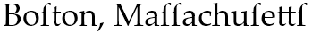
В следующем примере разметки показано, как задаются исторические формы для шрифта Palatino Linotype с помощью свойств класса Typography объекта.
<Paragraph FontFamily="Palatino Linotype">
<Run Typography.HistoricalForms="True">Boston, Massachusetts</Run>
</Paragraph>
Числовые стили
Шрифты OpenType поддерживают большое количество функций, которые могут использоваться с числовыми значениями в тексте.
Дроби
OpenType шрифты поддерживают разные стили для дробей, включая диагональные и вертикальные дроби.
Следующий текст демонстрирует стили дробей для шрифта Palatino Linotype.
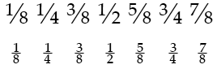
В следующем примере разметки показано, как задаются стили дробей для шрифта Palatino Linotype с помощью свойств класса Typography объекта.
<Paragraph FontFamily="Palatino Linotype" Typography.Fraction="Slashed">
1/8 1/4 3/8 1/2 5/8 3/4 7/8
</Paragraph>
<Paragraph FontFamily="Palatino Linotype" Typography.Fraction="Stacked">
1/8 1/4 3/8 1/2 5/8 3/4 7/8
</Paragraph>
Числа в старом стиле
OpenType шрифты поддерживают формат чисел старого стиля. Этот формат используется для отображения чисел в стилях, которые уже не являются стандартными. Следующий текст демонстрирует дату 18 века в стандартном формате и в формате старого стиля для шрифта Palatino Linotype.
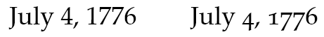
Следующий текст демонстрирует стандартные числа и числа в старом стиле для шрифта Palatino Linotype.
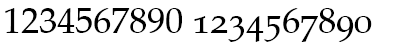
В следующем примере разметки показано, как для определения числа в старом стиле для шрифта Palatino Linotype с помощью свойств класса Typography объекта.
<Paragraph FontFamily="Palatino Linotype">
<Run Typography.NumeralStyle="Normal">1234567890</Run>
<Run Typography.NumeralStyle="OldStyle">1234567890</Run>
</Paragraph>
Пропорциональные и табличные цифры
OpenType шрифты поддерживают отображение пропорциональных и табличных цифр для регулирования выравнивания по ширине при использовании чисел. При использовании пропорциональных цифр каждая цифра имеет свою ширину — например 1 будет уже, чем 5. Табличные цифры имеют одинаковую ширину, поэтому их можно выравнивать по вертикали, что повышает удобочитаемость финансовой информации.
В первом столбце следующего текста показаны два числа, использующие пропорциональные цифры и шрифт Miramonte. Обратите внимание на разную ширину цифр 5 и 1. Во втором столбце показаны те же два числа, ширина которых скорректирована с помощью функции табличных цифр.
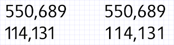
В следующем примере разметки показано, как определить пропорциональные и табличные цифры для шрифта Miramonte с помощью свойств класса Typography объекта.
<TextBlock FontFamily="Miramonte">
<Run Typography.NumeralAlignment="Proportional">114,131</Run>
</TextBlock>
<TextBlock FontFamily="Miramonte">
<Run Typography.NumeralAlignment="Tabular">114,131</Run>
</TextBlock>
Перечеркнутый нуль
OpenType шрифты поддерживают перечеркнутого нуля формат чисел, чтобы подчеркнуть разницу между буквой «O» и цифрой «0». Числа с перечеркнутым нулем часто используются для идентификаторов в финансовых и деловых сведениях.
Следующий текст демонстрирует пример идентификатора заказа с использованием шрифта Miramonte. В первой строке используются стандартные цифры. Во второй строке используются перечеркнутые нули для лучшего контраста с прописной буквой O.
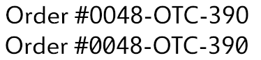
В следующем примере разметки показано, как определить перечеркнутые нули для шрифта Miramonte с помощью свойств класса Typography объекта.
<Paragraph FontFamily="Miramonte">
<Run>Order #0048-OTC-390</Run>
<LineBreak/>
<Run Typography.SlashedZero="True">Order #0048-OTC-390</Run>
</Paragraph>
Класс Typography
Typography Объект предоставляет набор функций, OpenType поддерживает шрифт. Задав свойства Typography в разметке, можно легко создавать документы, которые используют преимущества OpenType функции.
Следующий текст демонстрирует стандартные прописные буквы, буквы в стиле SmallCaps и в стиле AllSmallCaps для шрифта Pescadero. В данном случае для всех трех слов используется один и тот же размер шрифта.
В следующем примере разметки показано, как задаются прописные буквы для шрифта Pescadero с помощью свойств класса Typography объекта. При использовании формата SmallCaps начальные прописные буквы игнорируются.
<Paragraph FontFamily="Pescadero" FontSize="48">
<Run>CAPITALS</Run>
<Run Typography.Capitals="SmallCaps">Capitals</Run>
<Run Typography.Capitals="AllSmallCaps">Capitals</Run>
</Paragraph>
Следующий пример кода выполняет ту же задачу, что и предыдущий пример разметки.
MyParagraph.FontFamily = new FontFamily("Pescadero");
MyParagraph.FontSize = 48;
Run run_1 = new Run("CAPITALS ");
MyParagraph.Inlines.Add(run_1);
Run run_2 = new Run("Capitals ");
run_2.Typography.Capitals = FontCapitals.SmallCaps;
MyParagraph.Inlines.Add(run_2);
Run run_3 = new Run("Capitals");
run_3.Typography.Capitals = FontCapitals.AllSmallCaps;
MyParagraph.Inlines.Add(run_3);
MyParagraph.Inlines.Add(new LineBreak());
Warning
It looks like the sample you are looking for does not exist.
Свойства класса Typography
В следующей таблице перечислены свойства, значения и параметры по умолчанию Typography объекта.